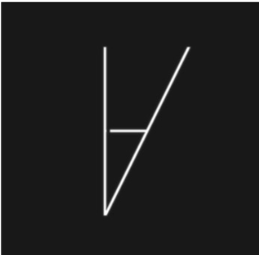

VisionBird – An AR Motorcycle Helmet 
VisionBird is a motorcycle helmet that uses proximity sensors and an AR display to eliminate the driver’s blind spots, and thus improve the driver’s safety. I was responsible for building the hardware.
What was accomplished:
- Developed the hardware for 2 prototypes.
- Hardware: building AR display, 3D printing, circuit designing, soldering.
- Software: object recognition, alerting the user, reducing latency of the detection.
- Top 50 startups at MIT Enterprise Forum Pan Arab.
For further details, please check out the following article: